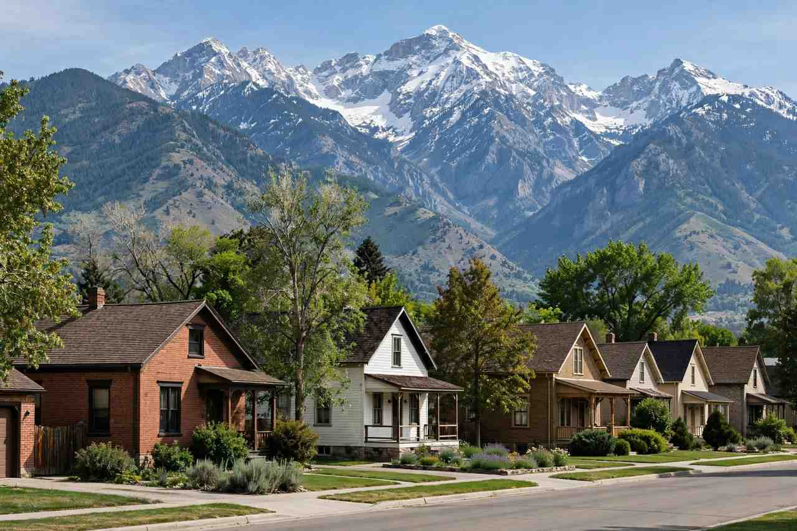

Rodent Control · Veyo, UT
Trusted Rodent Control in Veyo, UT
Hearing scratching at night or finding droppings in Veyo? Murvo is a rodent-only specialist offering same-day service from local crews. We identify the species, remove the infestation, clean up the mess, and exclude rodents for good. Pricing is flat-rate and quoted in writing, the work is guaranteed in writing, and coverage extends across Washington County for homes and businesses alike. Service covers 1 ZIP codes across Washington County, including 84782, with same-day appointments where schedules allow.
24/7Availability
1ZIP codes covered
Same-dayResponse
Licensed · Upfront options · Written guarantees · Fully insured
Veyo at a glance
Local Rodent Control for Veyo, UT.
Washington County
Countysouthwest Utah
RegionSt. George · 19 mi
Nearest metro256 miles southwest of Salt Lake City
From Salt Lake City1
ZIP codes covered Service by service in Veyo
Rodent Control Services Available in Veyo
Thirty rodent services, one local standard in Veyo: inspection-led, exclusion-first, and quoted in writing before work begins. Browse the full list for Washington County below - each section explains what the service involves here, what it typically costs nationally, and how fast we can start.
- 01Rodent Control↗
- 02Rodent Inspection↗
- 03Rodent Removal↗
- 04Rodent Exclusion↗
- 05Rodent Proofing↗
- 06Rat Control↗
- 07Mice Control↗
- 08Mouse Removal↗
- 09Rat Removal↗
- 10Rodent Trapping↗
- 11Rodent Baiting↗
- 12Rodenticide Application↗
- 13Attic Rodent Removal↗
- 14Crawl Space Rodent Removal↗
- 15Wall Rodent Removal↗
- 16Kitchen Rodent Control↗
- 17Garage Rodent Control↗
- 18Commercial Rodent Control↗
- 19Residential Rodent Control↗
- 20Emergency Rodent Removal↗
- 21Same-Day Rodent Control↗
- 22Rodent Damage Repair↗
- 23Rodent Waste Cleanup↗
- 24Rodent Disinfection↗
- 25Rodent Odor Removal↗
- 26Dead Rodent Removal↗
- 27Rodent Dropping Cleanup↗
- 28Rodent Exclusion for Roofs↗
- 29Rodent Exclusion for Vents↗
- 30Rodent Exclusion for Chimneys↗
Rodent Control in Veyo
Rodent Control in Veyo
In suburban homes at the foothill interface, cabins and second homes, and older in-town homes with basements, rodents rarely use the front door. They follow garage door seals, foundation and sill gaps, roofline gaps at snow-loaded eaves, and vents on cabins and outbuildings, settle where it stays warm, and expand from there across Washington County homes. Our rodent control pairs careful identification of House mouse (Mus musculus) and Deer mouse (Peromyscus maniculatus) with trapping, sealing, and monitoring, handled by licensed and insured technicians who document each stage for you.
Homeowners in Veyo call Murvo for rodent control because the problem here is specific: House mouse (Mus musculus) pressure around suburban homes at the foothill interface, cabins and second homes, and older in-town homes with basements, tight access at garage door seals, foundation and sill gaps, roofline gaps at snow-loaded eaves, and vents on cabins and outbuildings, and activity that follows the local season. Our Washington County crews diagnose the real source before recommending work, explain the options in plain language, and quote one flat rate in writing. Across Veyo - including Dammeron Valley, Central - every visit is backed by licensed, insured technicians and our written workmanship guarantee. Around Central, Pine Valley, Ivins, the pattern is similar: Deer mouse (Peromyscus maniculatus) finds garage door seals, foundation and sill gaps, roofline gaps at snow-loaded eaves, and vents on cabins and outbuildings first, and lasting rodent control has to close those routes.
Consider how a visit unfolds. The technician walks the exterior before touching anything indoors, noting gaps, rub marks, and food sources. Inside, attic and crawl-space evidence shapes the trapping plan, which is adjusted visit by visit as numbers change. Cleanup guidance covers contaminated areas safely, and exclusion work closes the route permanently. Throughout, photographs and written notes keep you informed, so progress is something you can see and verify rather than something you are asked to trust. Photographs taken at the start make those later comparisons honest, because memory alone tends to blur the details.
Booking takes one call, and same-day appointments are available in most Veyo areas. Work is carried out in stages, with trap checks and sealing visits booked ahead. At the final visit we walk the finished work together and confirm monitoring is clear. Your technician inspects first, talks you through the plan in plain language, and only starts once you approve the written quote. Questions are answered at every stage, day or night.
In most of Veyo, we can offer a same-day appointment for rodent control, and our lines are open 24/7 for urgent cases like scratching in the walls or a rodent in a living area. Your technician inspects first, explains the plan, and quotes a flat rate in writing before any work begins, so help starts fast without surprises. Murvo's Veyo crews explain the finding either way, and the flat-rate quote leaves the decision with you.
The honest answer is that it depends on species, activity level, and how much sealing your home needs, which is why Murvo inspects first and then gives you a flat-rate quote in writing. For national context only, Angi's 2026 data averages rat and mouse removal and control at $396, typically $189 to $655; that is not a Murvo price, and your written quote is the figure you pay.
Rodent Inspection in Veyo
Rodent Inspection in Veyo
In suburban homes at the foothill interface, cabins and second homes, and older in-town homes with basements, the gap that matters is seldom the gap you can see. Rodents enter through garage door seals, foundation and sill gaps, roofline gaps at snow-loaded eaves, and vents on cabins and outbuildings and travel hidden routes, so a rodent inspection in Washington County has to look behind, above, and below. Our technicians trace those routes systematically and explain, in plain language, which findings demand action now.
Homeowners in Veyo call Murvo for rodent inspection because the problem here is specific: House mouse (Mus musculus) pressure around suburban homes at the foothill interface, cabins and second homes, and older in-town homes with basements, tight access at garage door seals, foundation and sill gaps, roofline gaps at snow-loaded eaves, and vents on cabins and outbuildings, and activity that follows the local season. Our Washington County crews diagnose the real source before recommending work, explain the options in plain language, and quote one flat rate in writing. Across Veyo - including Dammeron Valley, Central - every visit is backed by licensed, insured technicians and our written workmanship guarantee. In Veyo, rodent inspection calls most often involve suburban homes at the foothill interface, cabins and second homes, and older in-town homes with basements, where garage door seals, foundation and sill gaps, roofline gaps at snow-loaded eaves, and vents on cabins and outbuildings decide whether the fix holds.
We listen first: when you hear noises, and where, often points straight to the most active nesting areas. Technicians then trace active runways, identify whether droppings belong to House mouse (Mus musculus) or Deer mouse (Peromyscus maniculatus), and check insulation and wiring for damage. The visit ends with a written report covering species, entry points, contamination, and the removal and exclusion steps we recommend, each with a flat-rate price. That detail stops you paying for treatment aimed at the wrong species or the wrong part of the building.
After booking, we confirm your time window by text or call. Before leaving, they review photos and priorities with you, leave the written findings, and schedule any follow-up work you approve. On arrival, your background-checked technician checks in, protects floors and access points, and works through a set inspection checklist inside and out. The inspection itself is backed by licensed, insured service and our written workmanship guarantee on quoted work.
Inspections are the fastest way we help in Veyo: same-day appointments are available in most areas, and urgent calls are answered 24/7. A typical rodent inspection takes under an hour for most homes, and you leave the visit with photos, written findings, and a flat-rate quote for any work we recommend, so decisions never wait on us. The written quote for your Veyo property will spell out exactly which of these applies before any work starts.
Your exact rodent inspection price is confirmed before we visit, and any follow-up work is quoted as a flat rate in writing after the inspection — no hourly billing. For context, Angi's 2026 data puts a professional rodent inspection nationally at $100 to $200, often credited toward the job if you proceed.
Rodent Removal in Veyo
Rodent Removal in Veyo
A removal visit should solve a health concern, not create one. Murvo technicians wear protective equipment, bag and remove contaminated material safely, and keep children and pets away from working areas. We explain each stage in plain language, confirm when rooms are safe to use again, and back the finished job with a written workmanship guarantee.
In Veyo, rodent removal is not a generic spray-and-go service. Rodents exploit garage door seals, foundation and sill gaps, roofline gaps at snow-loaded eaves, and vents on cabins and outbuildings in suburban homes at the foothill interface, cabins and second homes, and older in-town homes with basements, and a fix that ignores those routes does not last. Murvo's Veyo team inspects first, shows you the evidence - droppings, gnaw marks, entry gaps - and then lays out the work with a flat-rate written quote. We serve all of Washington County from Veyo, including Dammeron Valley, Central, and every job is covered by our written workmanship guarantee. In Veyo, rodent removal calls most often involve suburban homes at the foothill interface, cabins and second homes, and older in-town homes with basements, where garage door seals, foundation and sill gaps, roofline gaps at snow-loaded eaves, and vents on cabins and outbuildings decide whether the fix holds.
We favor trap-based, no-poison removal first where practical, which is safer around children and pets and avoids animals dying in hidden voids. Traps are matched to the species and setting, placed where droppings and rub marks show real travel routes, then cleared and reset until numbers reach zero. Dead animals in inaccessible places are located and retrieved before odor develops, contaminated nesting material is removed, and sealing recommendations are prioritized so the route indoors closes permanently. Monitoring then confirms the home stays clear.
Once you book rodent removal in Veyo, we agree a time window and your technician arrives with traps, protective equipment, and a clear plan. When catches reach zero, we walk through the results, discuss sealing, and confirm your written guarantee before closing the job. Progress is photographed and shared with you throughout the program. The first visit confirms activity and sets traps; return visits clear and reset them on schedule. Nothing is left unexplained.
When rodents are active indoors in Veyo, waiting rarely helps. Rodent removal can usually start the same day you call, our line answers 24/7 for a rodent loose in a living area, and the first visit sets traps straight away. Scheduled returns then clear and reset them until monitoring shows the home is clear. If you are seeing signs now, an inspection this week is the fastest way to know which situation you are in.
How many animals are active, which species they are, and how much sealing follows removal all shape the price, so we assess first and then quote one flat rate in writing. Angi's 2026 national context — an average of $396 and a typical $189 to $655 range for rat and mouse removal — is provided for comparison only; your written quote is the exact Murvo figure.
Rodent Exclusion in Veyo
Rodent Exclusion in Veyo
In suburban homes at the foothill interface, cabins and second homes, and older in-town homes with basements, exclusion is detective work as much as building work. Rub marks at garage door seals, foundation and sill gaps, roofline gaps at snow-loaded eaves, and vents on cabins and outbuildings, droppings below a vent, and daylight under a door each point somewhere different in Washington County homes. Our technicians follow those clues for House mouse (Mus musculus) and Deer mouse (Peromyscus maniculatus), prioritize active openings, and leave inactive weaknesses clearly noted.
When you need rodent exclusion in Veyo, the job starts with what is actually happening in your part of Washington County. Murvo crews work Veyo every week, so they know how House mouse (Mus musculus) and Deer mouse (Peromyscus maniculatus) behave around suburban homes at the foothill interface, cabins and second homes, and older in-town homes with basements here - and where they get in: garage door seals, foundation and sill gaps, roofline gaps at snow-loaded eaves, and vents on cabins and outbuildings. We arrive equipped for the full job, confirm the flat rate in writing before work begins, and cover the whole Veyo area, including Dammeron Valley, Central. No call-center runaround and no open-ended hourly billing - just a local crew, a clear plan, and a written quote you approve first. The Veyo crews who handle rodent exclusion also handle the follow-through - proofing, cleanup, and monitoring - so one visit can close the whole problem.
Before any sealing, active rodents are cleared with trapping so nothing is trapped inside the structure. We then work opening by opening around garage door seals, foundation and sill gaps, roofline gaps at snow-loaded eaves, and vents on cabins and outbuildings, rooflines, and utility penetrations, photographing each finished seal. Because exclusion removes the route in rather than relying on chemicals, it reduces the need for rodenticides and supports pet-safe, no-poison control. A final walkthrough shows you every protected opening, and monitoring checks confirm no new activity appears at sealed points. Every seal is listed on your written guarantee.
Before sealing day, confirm pets are secured and access to the roofline and foundation is clear. The crew then works through the agreed list, checks that no animals remain inside, and fits each seal cleanly. Afterwards you receive the photographs, the guarantee, and a date for the follow-up check that confirms everything is holding as intended. If monitoring ever finds fresh activity at a sealed point, that written inventory tells us exactly what to inspect first.
Rodent exclusion in Veyo usually starts with a survey visit we can often schedule the same day you call. Sealing itself is booked as soon as any active animals are cleared, because nothing is sealed inside. Most homes are fully sealed within days, not weeks, and urgent entry points near wiring or food areas are prioritized first. A Veyo inspection confirms it on site - dropping size, gnaw marks, and entry points tell the story quickly.
After the survey of your Veyo home, every opening that needs sealing is listed and priced as one flat-rate written quote, so you pay only for the work your property needs. For national context, Angi's 2026 data puts basic exclusion at $200 to $600 depending on access and the number of openings; that benchmark is not a Murvo price.
Rodent Proofing in Veyo
Rodent Proofing in Veyo
The best rodent problem is the one that never starts. Rodent proofing in Veyo hardens your home before House mouse (Mus musculus) and Deer mouse (Peromyscus maniculatus) move in: sealing gaps, screening vents, fitting door sweeps, and removing the food and shelter that attract them. Murvo surveys the whole property, prioritizes the work, and gives one flat-rate written quote for the work.
Homeowners in Veyo call Murvo for rodent proofing because the problem here is specific: House mouse (Mus musculus) pressure around suburban homes at the foothill interface, cabins and second homes, and older in-town homes with basements, tight access at garage door seals, foundation and sill gaps, roofline gaps at snow-loaded eaves, and vents on cabins and outbuildings, and activity that follows the local season. Our Washington County crews diagnose the real source before recommending work, explain the options in plain language, and quote one flat rate in writing. Across Veyo - including Dammeron Valley, Central - every visit is backed by licensed, insured technicians and our written workmanship guarantee. Coverage for rodent proofing spans 1 ZIP codes in Washington County, including 84782.
Materials follow the same standard as full exclusion work: copper mesh packed into irregular gaps, hardware cloth over openings that need airflow, flashing at vulnerable junctions, and sealants matched to smaller cracks. Around kitchens, pipe runs and the voids behind units receive particular attention, because warmth and food meet there. The written plan photographs each weakness, states who handles it, and schedules a seasonal re-check, since new gaps appear as a building ages and proofing works best as maintenance. Seasonal timing is noted in the plan as well.
Arrange a survey at a time that suits you; there is no emergency, so scheduling stays relaxed. You then receive a written quote separating essential work from optional improvements, and nothing proceeds without your say-so. Your technician walks every side of the property with you, photographs weak points, and talks through the plan in plain language. Staging the work is fine; essential sealing can proceed first while optional improvements wait until a season or budget that suits you better.
Proofing is planned work rather than an emergency, but you can still move fast: rodent proofing surveys in Veyo are often available the same day and always within a few days. Once you approve the plan, most work is finished in a single visit, ideally before colder weather drives rodents indoors. That is also why Murvo pairs removal with exclusion in Veyo - treating the animal without closing garage door seals, foundation and sill gaps, roofline gaps at snow-loaded eaves, and vents on cabins and outbuildings rarely lasts.
We survey your Veyo property first, separate the quick wins you can handle yourself from the specialist sealing, and quote the professional work as one flat rate in writing so spending can be staged. Angi's 2026 national context puts exclusion, the core of proofing, at $200 to $600 for basic work — a benchmark only, not a Murvo price.
Rat Control in Veyo
Rat Control in Veyo
What separates control from a temporary lull? Monitoring that continues after the last catch. Murvo keeps checking until routes stay quiet, removes trapped rats hygienically, and finishes with exclusion so replacements cannot follow the same path. Licensed, insured technicians document every visit, and urgent calls are answered 24/7.
In Veyo, rat control is not a generic spray-and-go service. Rodents exploit garage door seals, foundation and sill gaps, roofline gaps at snow-loaded eaves, and vents on cabins and outbuildings in suburban homes at the foothill interface, cabins and second homes, and older in-town homes with basements, and a fix that ignores those routes does not last. Murvo's Veyo team inspects first, shows you the evidence - droppings, gnaw marks, entry gaps - and then lays out the work with a flat-rate written quote. We serve all of Washington County from Veyo, including Dammeron Valley, Central, and every job is covered by our written workmanship guarantee. Around Central, Pine Valley, Ivins, the pattern is similar: Deer mouse (Peromyscus maniculatus) finds garage door seals, foundation and sill gaps, roofline gaps at snow-loaded eaves, and vents on cabins and outbuildings first, and lasting rat control has to close those routes.
Control starts with species and route identification, because roof rats and Norway rats behave and enter very differently. Technicians pre-bait unset traps along proven runways so wary rats feed confidently, then set them and return to check, clear, and adjust placements until activity stops. Trapped rats are removed hygienically, and each visit is documented with locations and counts. We then pair the program with roofline and entry-point exclusion, plus attic removal and cleanup where nests are found overhead. Progress is visible at every visit.
Call for rat control in Veyo and we will book an inspection, often the same day for active problems. Your technician maps routes and harborage, explains the trapping plan, and gives you a flat-rate written quote before any work begins. Trapping visits then run on a set schedule, with placements adjusted as activity shifts. The job closes only when monitoring confirms rats are gone and exclusion is complete. Your guarantee is confirmed in writing.
Call day or night — urgent rat control calls in Veyo are answered 24/7, and a same-day inspection can usually start the program. Pre-baiting begins on that first visit once you approve the written quote, traps are set when rats are feeding confidently, and scheduled checks continue until activity stops. Around Veyo, suburban homes at the foothill interface, cabins and second homes, and older in-town homes with basements give rodents the most cover, which is why entry points get checked before traps are set.
Rat work varies with species, colony size, and how many entry points need sealing, so Murvo inspects first and quotes one flat rate in writing. For national context only, Angi's 2026 data averages rat control and removal at $396, typically $189 to $655. That benchmark is not a Murvo price; the written quote for your Veyo home is the exact figure you pay.
Mice Control in Veyo
Mice Control in Veyo
One mouse seen in a Veyo kitchen usually means more are nesting unseen, and mice breed quickly enough that a small problem becomes a large one within weeks. Murvo offers same-day appointments where available, builds the program around trapping and sealing rather than baits, and backs the finished work with a written workmanship guarantee for lasting peace of mind.
In Veyo, mice control is not a generic spray-and-go service. Rodents exploit garage door seals, foundation and sill gaps, roofline gaps at snow-loaded eaves, and vents on cabins and outbuildings in suburban homes at the foothill interface, cabins and second homes, and older in-town homes with basements, and a fix that ignores those routes does not last. Murvo's Veyo team inspects first, shows you the evidence - droppings, gnaw marks, entry gaps - and then lays out the work with a flat-rate written quote. We serve all of Washington County from Veyo, including Dammeron Valley, Central, and every job is covered by our written workmanship guarantee. Homes near Central tend to show activity first in Veyo, which is why inspections start with garage door seals, foundation and sill gaps, roofline gaps at snow-loaded eaves, and vents on cabins and outbuildings.
Mice travel short, familiar routes, hugging walls and rarely crossing open floors. Sealing then closes pencil-width gaps behind baseboards, around radiator pipes, and at service entries, while scent-marked surfaces are cleaned so new mice find no welcoming trail. Control exploits that habit: traps are clustered along baseboards, behind appliances, and inside attic voids where droppings concentrate, rather than scattered hopefully around rooms. Technicians clear and reset on schedule, tracking numbers visit by visit until they reach zero. That is why placements stay fixed between checks unless evidence, rather than impatience, gives a reason to move them.
Book mice control in Veyo with one call, and same-day visits are available in many areas. Your technician surveys the kitchen, attic, and voids, explains where mice are traveling, and gives you a flat-rate written quote before setting a single trap. Trap checks are scheduled before we leave, and a follow-up visit confirms activity has stopped before the job is signed off. Everything is explained in plain language for your household.
Mice programs move quickly in Veyo: a mice control survey can often be arranged the same day you call, and traps are set on that first visit once you approve the quote. Because mice investigate new objects fast, catches usually begin quickly, and scheduled check visits follow until a final confirmation shows activity has fully stopped. If you are seeing signs now, an inspection this week is the fastest way to know which situation you are in.
The number of rooms affected and the amount of sealing required set the price, so Murvo surveys first and quotes one flat rate in writing. For national context only, Angi's 2026 data averages rat and mouse control and removal at $396, typically $189 to $655 — not a Murvo price; your written quote is exact.
Mouse Removal in Veyo
Mouse Removal in Veyo
What does proper removal include beyond the traps themselves? Hygienic clearing of droppings and nesting, disinfection of affected cabinets, and sealing that stops the next mice using the same scent trails. Murvo delivers that complete finish with licensed, insured technicians and a written workmanship guarantee on the completed work.
Homeowners in Veyo call Murvo for mouse removal because the problem here is specific: House mouse (Mus musculus) pressure around suburban homes at the foothill interface, cabins and second homes, and older in-town homes with basements, tight access at garage door seals, foundation and sill gaps, roofline gaps at snow-loaded eaves, and vents on cabins and outbuildings, and activity that follows the local season. Our Washington County crews diagnose the real source before recommending work, explain the options in plain language, and quote one flat rate in writing. Across Veyo - including Dammeron Valley, Central - every visit is backed by licensed, insured technicians and our written workmanship guarantee. Homes near Central tend to show activity first in Veyo, which is why inspections start with garage door seals, foundation and sill gaps, roofline gaps at snow-loaded eaves, and vents on cabins and outbuildings.
Trap-based removal is the default here for practical reasons. Once activity ends, access points are sealed thoroughly, and advice on storage and scent-trail cleaning helps the kitchen stay clear. It is safer around children and pets, results are visible and countable, and no animal is left to die inside a hidden void. Cleanup follows the same care: droppings and nesting are never dry-swept, surfaces are disinfected first, and waste is bagged and removed hygienically. Monitoring after sealing confirms the finish, so the result rests on evidence rather than a hopeful guess.
For urgent mouse problems in Veyo, contact Murvo for a same-day response where available. Your technician surveys the home, explains the multi-trap plan, and confirms a flat-rate written quote before starting. Return visits are scheduled to clear and reset traps, and cleanup and sealing follow once catches reach zero. The final visit confirms the result and your written workmanship guarantee. You are updated after every visit, without ever chasing us.
In Veyo, mouse removal can often begin the same day you call, especially where mice are active in kitchens or living areas. The first visit surveys nesting sites and sets traps immediately after you approve the quote; because mice investigate traps quickly, catches usually start fast, and return visits continue until numbers reach zero. That is also why Murvo pairs removal with exclusion in Veyo - treating the animal without closing garage door seals, foundation and sill gaps, roofline gaps at snow-loaded eaves, and vents on cabins and outbuildings rarely lasts.
Rooms involved and sealing needed determine the cost of removal, so we survey first and agree a flat rate in writing before work begins. As national context only, Angi's 2026 data averages rat and mouse removal at $396, with a typical range of $189 to $655; that benchmark is not a Murvo price, and your written quote covers your exact program.
Rat Removal in Veyo
Rat Removal in Veyo
A hurried rat removal that misses breeding females or a hidden nest simply restarts the cycle. Murvo's rat removal in Veyo starts with a species and colony-size assessment, uses pre-baited traps on confirmed runways, and removes animals hygienically across repeat visits. A flat-rate written quote is agreed before trapping starts.
When you need rat removal in Veyo, the job starts with what is actually happening in your part of Washington County. Murvo crews work Veyo every week, so they know how House mouse (Mus musculus) and Deer mouse (Peromyscus maniculatus) behave around suburban homes at the foothill interface, cabins and second homes, and older in-town homes with basements here - and where they get in: garage door seals, foundation and sill gaps, roofline gaps at snow-loaded eaves, and vents on cabins and outbuildings. We arrive equipped for the full job, confirm the flat rate in writing before work begins, and cover the whole Veyo area, including Dammeron Valley, Central. No call-center runaround and no open-ended hourly billing - just a local crew, a clear plan, and a written quote you approve first. In Veyo, rat removal calls most often involve suburban homes at the foothill interface, cabins and second homes, and older in-town homes with basements, where garage door seals, foundation and sill gaps, roofline gaps at snow-loaded eaves, and vents on cabins and outbuildings decide whether the fix holds.
Removal stays trap-led and exclusion-backed throughout. After clearance, contaminated areas are sanitized carefully, with surfaces disinfected before cleaning and droppings never dry-swept. Monitoring devices and a documented final walkthrough then prove activity has ended, and proofing advice covers drains, vents, and rooflines going forward. Locked bait stations appear only where a site genuinely justifies them, positioned away from pets and food, labeled, and monitored on schedule; loose bait is never used. That written evidence stays with you, including the monitoring readings that supported the decision to sign off.
Book and we will agree a visit time, with same-day appointments for active infestations where available. Your technician assesses the colony, explains each stage, and confirms the written quote before pre-baiting begins. Repeat visits are scheduled in advance, progress is reported after each one, and sealing follows once catches stop and monitoring stays clear. Every visit is documented with counts and locations, so the final clearance rests on a complete record rather than a single quiet check.
In Veyo, rat removal can usually start the same day you call, with 24/7 answering for rats active in living areas. Pre-baiting begins on the first visit after you approve the written quote, and traps are set once rats feed confidently, typically within days. Repeat visits then run frequently until monitoring confirms the colony is gone. Around Veyo, suburban homes at the foothill interface, cabins and second homes, and older in-town homes with basements give rodents the most cover, which is why entry points get checked before traps are set.
Rat removal pricing depends on colony size, access, and the sealing needed afterwards, so Murvo assesses your property first and quotes a flat rate in writing. For national context only, Angi's 2026 data averages rat removal at $396, typically $189 to $655. That is a benchmark, not a Murvo price, and your written quote covers the full program described.
Rodent Trapping in Veyo
Rodent Trapping in Veyo
Good trapping is species craft, not guesswork. In Veyo, wary House mouse (Mus musculus) need unset traps pre-baited for several days before they will feed confidently, while Deer mouse (Peromyscus maniculatus) respond to clustered traps at activity hotspots. Our technicians match trap types and baits to the species and setting, from food lures in kitchens to robust devices for larger rats in basements.
When you need rodent trapping in Veyo, the job starts with what is actually happening in your part of Washington County. Murvo crews work Veyo every week, so they know how House mouse (Mus musculus) and Deer mouse (Peromyscus maniculatus) behave around suburban homes at the foothill interface, cabins and second homes, and older in-town homes with basements here - and where they get in: garage door seals, foundation and sill gaps, roofline gaps at snow-loaded eaves, and vents on cabins and outbuildings. We arrive equipped for the full job, confirm the flat rate in writing before work begins, and cover the whole Veyo area, including Dammeron Valley, Central. No call-center runaround and no open-ended hourly billing - just a local crew, a clear plan, and a written quote you approve first. Homes near Central tend to show activity first in Veyo, which is why inspections start with garage door seals, foundation and sill gaps, roofline gaps at snow-loaded eaves, and vents on cabins and outbuildings.
A program opens with mapping, not trap placement. Every device is numbered, recorded, and revisited on a fixed schedule. Technicians read droppings, rub marks, and gnaw damage to reconstruct nightly routes through attics, basements, and kitchens. Devices are then selected for each location: snap traps for decisive results, multi-catch units on busy mouse routes, live-capture where release is preferred. For rats, pre-baiting runs several days before traps are set, the step most amateur attempts skip. The map also prevents a common mistake: removing a device that looks empty while its route is still active.
Book rodent trapping in Veyo and a technician can often start the same day. When numbers reach zero, we confirm monitoring is clear and discuss sealing. The first visit inspects, maps activity, and places or pre-baits traps; you approve a flat-rate written quote covering the program including check visits before we proceed. Scheduled returns clear and reset traps and share catch records with you. The finished program is guaranteed in writing.
In Veyo, rodent trapping can usually start the same day you call, with traps placed or pre-baiting begun on the first visit after you approve the quote. Mice often investigate within the first night; wary rats need a few days of pre-baiting before traps are set. Scheduled check visits then keep catches moving until numbers reach zero. If you are seeing signs now, an inspection this week is the fastest way to know which situation you are in.
Trapping is usually quoted as part of a complete removal program rather than by the trap, and the price depends on species, activity level, and how many check visits are needed. Murvo inspects first and quotes one flat rate in writing covering the program and its check visits, so there are no per-visit surprises and no hourly billing at any stage.
Rodent Baiting in Veyo
Rodent Baiting in Veyo
State rules shape how baiting works in Utah: some states restrict anticoagulant rodenticides, and Murvo follows the strictest applicable limits on every job. Before any station is placed at your Veyo property, a technician maps activity, reviews pet and child concerns with you, and explains exactly what to watch for between monitoring visits. Nothing is placed without that conversation.
In Veyo, rodent baiting is not a generic spray-and-go service. Rodents exploit garage door seals, foundation and sill gaps, roofline gaps at snow-loaded eaves, and vents on cabins and outbuildings in suburban homes at the foothill interface, cabins and second homes, and older in-town homes with basements, and a fix that ignores those routes does not last. Murvo's Veyo team inspects first, shows you the evidence - droppings, gnaw marks, entry gaps - and then lays out the work with a flat-rate written quote. We serve all of Washington County from Veyo, including Dammeron Valley, Central, and every job is covered by our written workmanship guarantee. Coverage for rodent baiting spans 1 ZIP codes in Washington County, including 84782.
Baiting here sits inside a wider sequence, never outside it. Inspection maps activity and identifies where pressure originates. Exclusion work seals the structure, trapping clears animals already indoors, and only then do locked stations address the outdoor population along fence lines and runways. Each station is anchored, labeled, and photographed, with its location recorded. Monitoring visits log consumption precisely, and falling consumption, confirmed by other signs, decides when stations are reduced and finally removed altogether. Those logs become especially important when activity fades, because several quiet checks must agree before stations come out.
Booking rodent baiting in Veyo starts with an inspection, not a station. Approved stations are installed locked and labeled the same visit, with locations photographed for you. Monitoring visits are scheduled before we leave, and stations come out once activity is confirmed clear. Your technician maps activity, reviews pet, child, and wildlife concerns with you, and confirms a flat-rate written quote before anything is placed. Your written guarantee covers the full program.
Deliberate setup matters more than speed with rodent baiting, but the first step is still fast: an inspection in Veyo can often be arranged the same day you call. Stations are placed only after activity is mapped and you approve the written quote and each location, then monitoring runs on a fixed schedule until consumption stops and activity is confirmed clear. In Washington County, most cases involve the House mouse (Mus musculus) and the Deer mouse (Peromyscus maniculatus), so the inspection focuses on their routes first.
How many locked stations your property needs and how long monitoring runs determine the cost, so Murvo inspects and maps activity first, then quotes one flat rate in writing covering placement and scheduled checks. There are no per-visit surprises, and because the approach is exclusion-first, the aim is to reduce and eventually remove stations rather than maintain them forever.
Rodenticide Application in Veyo
Rodenticide Application in Veyo
Rodenticides are powerful products that can harm pets, children, and wildlife if misused, so Murvo treats rodenticide application in Veyo as a last resort, never a first step. Products are placed only inside tamper-resistant locked stations, never as loose pellets or open trays, and only after inspection confirms trapping and exclusion alone will not solve the problem.
In Veyo, rodenticide application is not a generic spray-and-go service. Rodents exploit garage door seals, foundation and sill gaps, roofline gaps at snow-loaded eaves, and vents on cabins and outbuildings in suburban homes at the foothill interface, cabins and second homes, and older in-town homes with basements, and a fix that ignores those routes does not last. Murvo's Veyo team inspects first, shows you the evidence - droppings, gnaw marks, entry gaps - and then lays out the work with a flat-rate written quote. We serve all of Washington County from Veyo, including Dammeron Valley, Central, and every job is covered by our written workmanship guarantee. Coverage for rodenticide application spans 1 ZIP codes in Washington County, including 84782.
Monitoring data guides the whole treatment: whether it continues, changes product, or stops entirely in favor of proofing alone. Dead rodents are retrieved promptly where accessible, stations are kept away from pet and child areas, and every product used is documented with its label and safety information, so nothing applied at your property is ever hidden from you. We prioritize sealing entry points with exclusion and physical removal so dependence on chemical control shrinks visit by visit. State restrictions are checked before product selection.
Booking rodenticide application in Veyo starts with an inspection visit, often available the same day. If you proceed, stations are installed locked and labeled, monitoring visits are scheduled, and treatment continues only while monitoring data supports it, under our written workmanship guarantee. Your licensed technician confirms whether treatment is justified, explains safer alternatives first, and gives you a flat-rate written quote before anything is applied. You can stop the program at any point.
In Veyo, rodenticide application begins with an inspection we can often schedule the same day you call, because no responsible application happens without one. If treatment is justified and you approve the written quote, locked stations are installed on that visit. Monitoring then runs on schedule, and treatment stops as soon as data shows activity has ended. The written quote for your Veyo property will spell out exactly which of these applies before any work starts.
Station numbers, the product permitted under Utah rules, and the length of monitoring all shape the price. Murvo inspects first, explains whether trapping or exclusion could avoid chemical control entirely, and then quotes one flat rate in writing before work begins. That quote covers scheduled monitoring visits, so there are no per-visit surprises later.
Attic Rodent Removal in Veyo
Attic Rodent Removal in Veyo
In suburban homes at the foothill interface, cabins and second homes, and older in-town homes with basements, attics reward rodents generously: warm insulation for nesting, quiet during daylight, and access through garage door seals, foundation and sill gaps, roofline gaps at snow-loaded eaves, and vents on cabins and outbuildings that stays invisible from the ground across Washington County. Our technicians photograph nests, droppings, and gnawed cables, check for young, and examine adjoining crawl spaces so connected activity is not left behind.
In Veyo, attic rodent removal is not a generic spray-and-go service. Rodents exploit garage door seals, foundation and sill gaps, roofline gaps at snow-loaded eaves, and vents on cabins and outbuildings in suburban homes at the foothill interface, cabins and second homes, and older in-town homes with basements, and a fix that ignores those routes does not last. Murvo's Veyo team inspects first, shows you the evidence - droppings, gnaw marks, entry gaps - and then lays out the work with a flat-rate written quote. We serve all of Washington County from Veyo, including Dammeron Valley, Central, and every job is covered by our written workmanship guarantee. In Veyo, attic rodent removal calls most often involve suburban homes at the foothill interface, cabins and second homes, and older in-town homes with basements, where garage door seals, foundation and sill gaps, roofline gaps at snow-loaded eaves, and vents on cabins and outbuildings decide whether the fix holds.
Cleanup in a contaminated attic follows CDC guidance: droppings and nesting material are never dry-swept, because that can spread contamination into the air; surfaces are disinfected first, then waste is removed hygienically by technicians in protective equipment. We also assess insulation damage and can refer repairs, check adjoining crawl spaces for connected activity, and advise on clearing roof debris. Our IPM approach favors trapping and exclusion over poison in attics, preventing animals dying in inaccessible voids. Photographs document conditions before and after work.
Book an attic visit, same-day where wiring damage or heavy activity makes it urgent. Trapping starts after approval, follow-up checks are booked ahead, and sealing plus cleanup complete the sequence before monitoring confirms the result. Your technician inspects overhead and along the roofline, shows you photographs of the evidence, and confirms the written quote. Wiring or insulation concerns are flagged separately in writing, so you can arrange any specialist repairs with clear information in hand.
In Veyo, attic rodent removal visits are often available the same day, and we prioritize attics where chewed wiring creates a fire risk. Trapping starts on the first visit after you approve the written quote, checks run on schedule, and most attics are cleared and sealed within days, with monitoring left briefly to confirm nothing remains inside. A Veyo inspection confirms it on site - dropping size, gnaw marks, and entry points tell the story quickly.
Activity levels, roofline sealing, and whether contaminated insulation needs cleanup all affect attic pricing, so Murvo inspects first and quotes one flat rate in writing for the removal program. Cleanup options are priced separately in writing before you decide, so nothing is added once work is underway.
Crawl Space Rodent Removal in Veyo
Crawl Space Rodent Removal in Veyo
Droppings under the house, a torn vapor barrier, and smells drifting up through the floors are classic signs rodents are living beneath your Veyo home. Murvo's crawl space rodent removal inspects the under-home space, traps active animals there, and seals foundation vents and gaps. Because activity below often connects to the attic through wall voids, we trace the full route.
In Veyo, crawl space rodent removal is not a generic spray-and-go service. Rodents exploit garage door seals, foundation and sill gaps, roofline gaps at snow-loaded eaves, and vents on cabins and outbuildings in suburban homes at the foothill interface, cabins and second homes, and older in-town homes with basements, and a fix that ignores those routes does not last. Murvo's Veyo team inspects first, shows you the evidence - droppings, gnaw marks, entry gaps - and then lays out the work with a flat-rate written quote. We serve all of Washington County from Veyo, including Dammeron Valley, Central, and every job is covered by our written workmanship guarantee. The Veyo crews who handle crawl space rodent removal also handle the follow-through - proofing, cleanup, and monitoring - so one visit can close the whole problem.
Cleanup beneath a home follows careful practice throughout. Technicians also trace connections upward through wall voids, checking whether activity reaches the attic, and report moisture issues with practical recommendations. Photographs of every finished seal accompany your guarantee paperwork, creating a record of exactly what was closed. Droppings and nesting debris are never dry-swept, since disturbing them can spread contamination; surfaces are disinfected first, then waste is bagged and removed by technicians wearing protective equipment. Vent and pier sealing is checked from inside the space, not assumed sound from a glance outside.
After booking, we confirm crawl-space access and any known leaks or standing water beneath the home. Follow-up visits are booked ahead for clearance and sealing. The job closes with a monitoring check and a walkthrough of the documented results together. On arrival, your background-checked technician inspects with protective equipment, sets traps at active areas, and talks you through the findings with photos. Every stage is approved by you before it proceeds.
In Veyo, crawl space rodent removal inspections can usually be arranged within a few days, and sooner where odors are drifting into living areas or activity sounds heavy. Trapping starts on the first visit after you approve the written quote, and clearance plus sealing follow in sequence, with monitoring left in place until the space below is confirmed quiet. Around Veyo, suburban homes at the foothill interface, cabins and second homes, and older in-town homes with basements give rodents the most cover, which is why entry points get checked before traps are set.
Crawl-space costs depend on access, how many vents and gaps need sealing, and whether waste cleanup is required, so Murvo inspects first and quotes one flat rate in writing. If extra vents need sealing within the agreed scope, there are no surprises, and cleanup options are priced in writing before you decide whether to include them.
Wall Rodent Removal in Veyo
Wall Rodent Removal in Veyo
What should never be used inside a wall? Poison, because an animal dying in a sealed void creates the odor problem everyone fears. Murvo relies on trapping and exclusion instead, safer around children and pets, and finishes with quiet-wall checks at different times of day before declaring the void clear.
In Veyo, wall rodent removal is not a generic spray-and-go service. Rodents exploit garage door seals, foundation and sill gaps, roofline gaps at snow-loaded eaves, and vents on cabins and outbuildings in suburban homes at the foothill interface, cabins and second homes, and older in-town homes with basements, and a fix that ignores those routes does not last. Murvo's Veyo team inspects first, shows you the evidence - droppings, gnaw marks, entry gaps - and then lays out the work with a flat-rate written quote. We serve all of Washington County from Veyo, including Dammeron Valley, Central, and every job is covered by our written workmanship guarantee. In Veyo, wall rodent removal calls most often involve suburban homes at the foothill interface, cabins and second homes, and older in-town homes with basements, where garage door seals, foundation and sill gaps, roofline gaps at snow-loaded eaves, and vents on cabins and outbuildings decide whether the fix holds.
Once the void is clear, we apply proofing to wall entry routes, sealing baseboard and pipe gaps linked to kitchen activity so the route cannot reopen. If a rodent has died in the wall, retrieval is followed by sanitation: contaminated material is never dry-swept, surfaces are disinfected first following CDC guidance, and odor treatment is applied so other rodents are not attracted back. Monitoring at key access points then confirms the void stays quiet. Connected voids are checked before we finish.
After booking, tell us when the noises happen; timing helps pinpoint the active void before we arrive. Follow-up visits clear traps and run quiet-wall checks at different times of day. Sign-off happens only when monitoring confirms silence. On the day, your background-checked technician listens, traces, and inspects with cameras where possible, then sets traps at access points once you approve the quote. Any access cut is agreed and made good neatly.
In Veyo, wall rodent removal locating visits are often available the same day you call, especially for persistent scratching keeping you awake. Trapping is set at access points on that first visit once you approve the written quote, and because rodents travel the void nightly, results usually follow within days, confirmed by quiet-wall checks before we sign off. In Washington County, activity follows the local season, so timing the work matters as much as the method.
Wall work pricing depends on how precisely activity can be located and whether a minimal access cut is needed, which is why Murvo locates the activity first and quotes a flat rate in writing. That way wall access work never becomes an open-ended bill, and the quote covers the trapping, sealing, and monitoring described in your plan.
Kitchen Rodent Control in Veyo
Kitchen Rodent Control in Veyo
You wipe the counters, yet droppings keep appearing by morning. That pattern points to rodents moving through wall voids and cabinet voids while the house sleeps. Our kitchen rodent control in Veyo tracks those routes, removes the animals away from food surfaces, and seals the openings so the cycle finally stops for good.
In Veyo, kitchen rodent control is not a generic spray-and-go service. Rodents exploit garage door seals, foundation and sill gaps, roofline gaps at snow-loaded eaves, and vents on cabins and outbuildings in suburban homes at the foothill interface, cabins and second homes, and older in-town homes with basements, and a fix that ignores those routes does not last. Murvo's Veyo team inspects first, shows you the evidence - droppings, gnaw marks, entry gaps - and then lays out the work with a flat-rate written quote. We serve all of Washington County from Veyo, including Dammeron Valley, Central, and every job is covered by our written workmanship guarantee. Homes near Central tend to show activity first in Veyo, which is why inspections start with garage door seals, foundation and sill gaps, roofline gaps at snow-loaded eaves, and vents on cabins and outbuildings.
Rather than starting with traps, we start with questions: where did you see signs, and when? Gaps around plumbing get sealed, contaminated spots get cleaned, and return checks confirm whether movement has ended. Answers guide a close look under sinks, behind appliances and inside lower cabinets. Once species and routes are confirmed, traps go where rodents actually travel, kept clear of counters and stored food. If activity shifts, placement changes with it, because a fixed plan rarely fits a moving problem inside a busy working kitchen.
It starts with a short call about sightings, sounds and access behind appliances. On arrival, your technician confirms the route rodents are using before quoting the full job in writing. Approved work removes the animals, closes entry gaps and addresses contaminated surfaces. We return as agreed to verify results, adjust if needed, and leave you with clear notes on what was sealed, what was cleaned, and what to watch for next.
Our phone lines are open 24/7, and kitchen cases involving droppings near food preparation areas are treated as a priority. In many Veyo cases we can arrange a same-day visit, subject to technician availability. Call, describe what you have found, and we will offer the earliest appointment we can. The written quote for your Veyo property will spell out exactly which of these applies before any work starts.
Cost depends on how many rodents are active, where they are entering, and how much sealing and cleanup the kitchen needs. Murvo inspects first, then gives one flat-rate written quote covering trapping, sealing and follow-up monitoring, with no hourly billing or add-on surprises. You approve the full price before any work begins, and the quote is backed by our written workmanship guarantee.
Garage Rodent Control in Veyo
Garage Rodent Control in Veyo
In Washington County garages often connect straight into kitchens, utility rooms and wall voids. Our garage rodent control tackles the garage as the front door it really is: thorough inspection, humane removal where possible, durable sealing, and practical storage advice that keeps rodents from settling in again. Help is available around the clock, every day.
Homeowners in Veyo call Murvo for garage rodent control because the problem here is specific: House mouse (Mus musculus) pressure around suburban homes at the foothill interface, cabins and second homes, and older in-town homes with basements, tight access at garage door seals, foundation and sill gaps, roofline gaps at snow-loaded eaves, and vents on cabins and outbuildings, and activity that follows the local season. Our Washington County crews diagnose the real source before recommending work, explain the options in plain language, and quote one flat rate in writing. Across Veyo - including Dammeron Valley, Central - every visit is backed by licensed, insured technicians and our written workmanship guarantee. In Veyo, garage rodent control calls most often involve suburban homes at the foothill interface, cabins and second homes, and older in-town homes with basements, where garage door seals, foundation and sill gaps, roofline gaps at snow-loaded eaves, and vents on cabins and outbuildings decide whether the fix holds.
Door corners get checked before anything else, because daylight showing at the base often marks the main entrance. Traps sit on those travel lines, not scattered at random. Nesting comes out safely, entry points get sealed with sturdy materials, and the door sweep is addressed where it has failed. From there we follow droppings and rub marks along walls, behind storage and toward utility lines entering the house. Final monitoring tells us whether the garage is truly quiet or whether activity is still passing through.
Once booked, your Murvo technician arrives at the agreed time, walks the garage with you and inspects doors, walls and storage. We return for monitoring checks, confirm the garage is clear, and leave storage advice behind. All work is covered by our written workmanship guarantee. You receive a flat-rate written quote before work starts. Approved work covers trapping, nest removal and sealing, carried out by a licensed, insured technician. We leave the area tidy when the work finishes.
Our phones are answered 24/7, and garages with active nesting, damaged wiring or movement into the house are treated as urgent. Depending on technician schedules, a same-day appointment in Veyo is often possible. Describe the signs when you call and we will offer the earliest visit we can arrange. Murvo's Veyo crews explain the finding either way, and the flat-rate quote leaves the decision with you.
Pricing depends on garage size, how established the infestation is, and how much proofing the doors and walls need. Murvo inspects first and quotes one flat rate in writing, covering trapping, nest removal, sealing and monitoring, with no hourly charges. Nothing starts until you approve that price, and the completed work is backed by our written workmanship guarantee.
Commercial Rodent Control in Veyo
Commercial Rodent Control in Veyo
Auditors look for evidence, not excuses. A single dropping near stored ingredients can undo months of careful work for a Veyo restaurant. Murvo's commercial rodent control protects food sites, warehouses and shops with documented inspections, monitored control and exclusion, beginning with a flat-rate written quote for the initial work you approve in advance.
When you need commercial rodent control in Veyo, the job starts with what is actually happening in your part of Washington County. Murvo crews work Veyo every week, so they know how House mouse (Mus musculus) and Deer mouse (Peromyscus maniculatus) behave around suburban homes at the foothill interface, cabins and second homes, and older in-town homes with basements here - and where they get in: garage door seals, foundation and sill gaps, roofline gaps at snow-loaded eaves, and vents on cabins and outbuildings. We arrive equipped for the full job, confirm the flat rate in writing before work begins, and cover the whole Veyo area, including Dammeron Valley, Central. No call-center runaround and no open-ended hourly billing - just a local crew, a clear plan, and a written quote you approve first. The Veyo crews who handle commercial rodent control also handle the follow-through - proofing, cleanup, and monitoring - so one visit can close the whole problem.
Programs follow Inspect, Remove, Exclude, Clean and Monitor. Staff receive simple training pointers so your team spots early droppings or gnawing before a small issue becomes an audit failure. Service is scheduled around trading hours, and urgent sightings during trading are handled with particular discretion to protect your reputation with waiting customers. Technicians map activity with monitoring points, trap discreetly away from customers, and proof dock doors, vents and pipe penetrations against re-entry. Each stage is recorded on your written service report.
Once you approve the proposal, we agree visit times, access arrangements and any site safety rules. Initial work tackles active rodents and the worst entry points first, followed by scheduled monitoring and proofing. You receive consistent reports suitable for food-safety audits after every visit. If a live sighting happens during trading, call us any time, day or night. The program is reviewed regularly so it keeps protecting the site. Your technician explains each visit before leaving the property.
Commercial calls are taken 24/7, and a live sighting during trading is handled as an emergency with discretion to protect customers and reputation. The visit we can offer in Veyo depends on technician availability, and we will always give you the earliest one possible. We can also advise on immediate steps to protect stock and your audit position while you wait. In Washington County, activity follows the local season, so timing the work matters as much as the method.
For wider context, Angi's 2026 figures put rat extermination at $189-$655, averaging $396 nationally, though commercial sites are scoped individually and those figures are not Murvo prices. Site size, sector, activity and the exclusion and monitoring required all shape the cost. Murvo surveys first, then quotes a flat rate in writing for initial work or a clear scheduled-service price for an ongoing program, with reports included for your audit file.
Residential Rodent Control in Veyo
Residential Rodent Control in Veyo
Homes in suburban homes at the foothill interface, cabins and second homes, and older in-town homes with basements give rodents warmth, food and quiet nesting space. Our residential rodent control in Veyo starts with a thorough inspection, uses pet-conscious methods with no loose poison indoors, and backs the finished work with a written workmanship guarantee from licensed, insured technicians. Help is available around the clock, every day.
When you need residential rodent control in Veyo, the job starts with what is actually happening in your part of Washington County. Murvo crews work Veyo every week, so they know how House mouse (Mus musculus) and Deer mouse (Peromyscus maniculatus) behave around suburban homes at the foothill interface, cabins and second homes, and older in-town homes with basements here - and where they get in: garage door seals, foundation and sill gaps, roofline gaps at snow-loaded eaves, and vents on cabins and outbuildings. We arrive equipped for the full job, confirm the flat rate in writing before work begins, and cover the whole Veyo area, including Dammeron Valley, Central. No call-center runaround and no open-ended hourly billing - just a local crew, a clear plan, and a written quote you approve first. Seasonal timing matters for residential rodent control in Veyo: rodents surge in Veyo from October through April.
Every home visit follows Inspect, Remove, Exclude, Clean and Monitor. Inspection covers attics, crawl spaces, garages, kitchens and the exterior, reading droppings, gnaw marks and rub marks to identify species and entry points such as garage door seals, foundation and sill gaps, roofline gaps at snow-loaded eaves, and vents on cabins and outbuildings. Removal uses targeted trapping placed safely away from children and pets. Exclusion seals the gaps found, cleanup disinfects contaminated areas, and monitoring visits confirm activity has ended rather than simply moved elsewhere in the house. Materials are chosen for durability, not the cheapest quick fix.
Book a visit and tell us about pets, children and where signs appeared. After approval, removal, sealing and cleaning proceed in a sensible sequence. We return for scheduled checks, share what each check shows, and finish only when monitoring confirms the home is clear. Your technician inspects the property, talks through what was found without jargon, and quotes the complete plan in writing. Prevention notes tailored to your layout are left with you at the end.
You can call us 24/7, and homes where rodents are in living areas, kitchens or children's bedrooms are prioritized in scheduling. A same-day visit in Veyo is often possible, subject to technician availability. Share what you have seen or heard and we will offer the earliest appointment available, plus advice for the meantime. If you are seeing signs now, an inspection this week is the fastest way to know which situation you are in.
Nationally, Angi's 2026 figures show rat extermination at $189-$655, averaging $396, but those are not Murvo prices for your home. Species, how established activity is, and the exclusion and cleanup needed determine the actual scope. Murvo inspects first and then gives one flat-rate written quote covering removal, sealing, cleaning and monitoring, with no hourly charges, for your approval before work begins.
Emergency Rodent Removal in Veyo
Emergency Rodent Removal in Veyo
A rat in the kitchen, scratching inside a bedroom wall or droppings found where children play cannot wait for a routine appointment. Our emergency rodent removal in Veyo is available 24/7, with licensed technicians who remove the animals, secure entry points and make the space safe again.
Homeowners in Veyo call Murvo for emergency rodent removal because the problem here is specific: House mouse (Mus musculus) pressure around suburban homes at the foothill interface, cabins and second homes, and older in-town homes with basements, tight access at garage door seals, foundation and sill gaps, roofline gaps at snow-loaded eaves, and vents on cabins and outbuildings, and activity that follows the local season. Our Washington County crews diagnose the real source before recommending work, explain the options in plain language, and quote one flat rate in writing. Across Veyo - including Dammeron Valley, Central - every visit is backed by licensed, insured technicians and our written workmanship guarantee. In Veyo, emergency rodent removal calls most often involve suburban homes at the foothill interface, cabins and second homes, and older in-town homes with basements, where garage door seals, foundation and sill gaps, roofline gaps at snow-loaded eaves, and vents on cabins and outbuildings decide whether the fix holds.
Urgency does not skip the basics. Removal comes first, followed by securing gaps, cleaning affected areas and setting monitors. Anything that cannot be finished safely that visit, such as larger sealing work, is explained clearly with a plan and price in writing. We still identify the species, still look for the route in, and still check whether this is one animal or part of a wider infestation. You end the visit knowing what was done, what remains, and what signs should prompt another call overnight.
Call any time, day or night, and describe what is happening. We agree the earliest visit available and any steps to keep people and pets safe meanwhile. On arrival the technician inspects, quotes one flat rate in writing, and starts once you approve. Removal and securing come first, then disinfection and monitoring. Follow-up visits confirm the home is clear, under our written workmanship guarantee. You stay informed at every stage of the work.
For emergencies, our line is open 24/7, every day, and calls from Veyo are triaged by risk — live rodents in living areas, food contamination and chewed wiring come first. We will offer the earliest visit our technicians can reach. Until then, we will talk you through simple steps to keep people and pets safe. The written quote for your Veyo property will spell out exactly which of these applies before any work starts.
For national context, Angi's 2026 data puts rat extermination at $189-$655, averaging $396, though emergency work is not priced from those figures and they are not Murvo prices. Location, numbers involved and the securing, cleanup or follow-up needed set the scope. On arrival Murvo inspects and quotes one flat rate in writing, with no hourly billing even on urgent jobs, and nothing starts until you approve it.
Same-Day Rodent Control in Veyo
Same-Day Rodent Control in Veyo
You found the droppings today, so today is when you want answers. Murvo's same-day rodent control in Veyo aims to inspect and begin work on the day you call, whenever scheduling allows. The visit includes a proper inspection and a flat-rate written quote before treatment starts, not a rushed guess over the phone.
In Veyo, same-day rodent control is not a generic spray-and-go service. Rodents exploit garage door seals, foundation and sill gaps, roofline gaps at snow-loaded eaves, and vents on cabins and outbuildings in suburban homes at the foothill interface, cabins and second homes, and older in-town homes with basements, and a fix that ignores those routes does not last. Murvo's Veyo team inspects first, shows you the evidence - droppings, gnaw marks, entry gaps - and then lays out the work with a flat-rate written quote. We serve all of Washington County from Veyo, including Dammeron Valley, Central, and every job is covered by our written workmanship guarantee. Around Central, Pine Valley, Ivins, the pattern is similar: Deer mouse (Peromyscus maniculatus) finds garage door seals, foundation and sill gaps, roofline gaps at snow-loaded eaves, and vents on cabins and outbuildings first, and lasting same-day rodent control has to close those routes.
Calling early gives the day structure. We gather the key facts by phone, then the technician begins on site with evidence: droppings, gnaw marks, sounds and likely entry points such as garage door seals, foundation and sill gaps, roofline gaps at snow-loaded eaves, and vents on cabins and outbuildings. Traps are set during that first visit wherever activity is confirmed, positioned with children and pets in mind. Gaps are logged and either sealed then or scheduled promptly, contaminated areas are addressed, and monitoring dates are set before we leave. You receive a written summary of what today covered and what happens next.
Booking takes one call. We confirm access, pets and where signs have been seen, then dispatch a technician as schedules allow. On site, inspection comes first, then your written quote and plan. Approved treatment begins the same visit, with follow-up appointments booked before we leave. We report progress honestly at each check, and only close the job when monitoring shows the property is clear. Questions are answered honestly throughout, with findings in writing.
Call as early in the day as you can and we will offer the earliest same-day appointment our Veyo technicians can reach, subject to availability. Our lines are open 24/7. If today is fully booked, we will offer the next available visit and advise on simple precautions to take meanwhile. That is also why Murvo pairs removal with exclusion in Veyo - treating the animal without closing garage door seals, foundation and sill gaps, roofline gaps at snow-loaded eaves, and vents on cabins and outbuildings rarely lasts.
Same-day work is priced the same fair way as any Murvo job: inspection first, then one flat-rate written quote based on species, activity levels and the exclusion and cleanup needed. There is no hourly billing and no premium surprise for speed. You approve the full price before treatment begins, and the work is backed by our written workmanship guarantee.
Rodent Damage Repair in Veyo
Rodent Damage Repair in Veyo
Repair only makes sense once rodents are gone and excluded. In Veyo Murvo sequences removal, exclusion and repair as one plan, quoted as a flat-rate written quote before work starts, covering gnawed materials, damaged insulation and the holes rodents made getting in. Call Murvo today for straightforward help.
Homeowners in Veyo call Murvo for rodent damage repair because the problem here is specific: House mouse (Mus musculus) pressure around suburban homes at the foothill interface, cabins and second homes, and older in-town homes with basements, tight access at garage door seals, foundation and sill gaps, roofline gaps at snow-loaded eaves, and vents on cabins and outbuildings, and activity that follows the local season. Our Washington County crews diagnose the real source before recommending work, explain the options in plain language, and quote one flat rate in writing. Across Veyo - including Dammeron Valley, Central - every visit is backed by licensed, insured technicians and our written workmanship guarantee. Around Central, Pine Valley, Ivins, the pattern is similar: Deer mouse (Peromyscus maniculatus) finds garage door seals, foundation and sill gaps, roofline gaps at snow-loaded eaves, and vents on cabins and outbuildings first, and lasting rodent damage repair has to close those routes.
Assessment starts once removal and exclusion are complete or scheduled, because repairing over an active infestation wastes money. We inspect attics, walls, garages and service areas for gnawed wiring, damaged pipes, shredded or urine-soaked insulation, chewed timber and holed vents or screens. Contaminated material is removed safely, following disinfection-first practice where droppings are present. Repairs then restore insulation, seal holes with gnaw-resistant materials, and replace damaged components, with electrical or plumbing risks flagged for licensed trades where needed. Nothing is left to guesswork at any stage.
One call arranges your assessment. On site we explain which damage matters most, quote the full repair in writing, and start only with your approval. Work proceeds in a clean sequence: safe removal of debris, disinfection, repair, proofing. Licensed, insured technicians carry out the work and tidy as they go. A final check confirms repairs are complete, and your written guarantee covers the workmanship. Nothing starts until you have approved the written quote.
You can reach us by phone 24/7, and urgent safety concerns in Veyo, such as chewed wiring, are prioritized for assessment. Repair itself is scheduled once removal and exclusion are under way, so active rodents do not undo the work. Call, describe the damage you can see, and we will arrange the earliest suitable visit. Murvo's Veyo crews explain the finding either way, and the flat-rate quote leaves the decision with you.
Repair costs depend on how much material is damaged, whether insulation needs replacing, and how many entry points require repair and proofing. Murvo assesses first and quotes one flat rate in writing for the agreed scope, with no hourly billing. You see exactly what is included before approving, and the completed repairs are backed by our written workmanship guarantee.
Rodent Waste Cleanup in Veyo
Rodent Waste Cleanup in Veyo
Droppings, urine-soaked insulation and nesting material are a health hazard, not just a mess. Our rodent waste cleanup in Veyo removes rodent waste safely, following CDC guidance: ventilate first, soak everything with disinfectant, and never dry-sweep or vacuum droppings. Licensed technicians wear full PPE throughout. That is the standard Murvo works to in Utah.
When you need rodent waste cleanup in Veyo, the job starts with what is actually happening in your part of Washington County. Murvo crews work Veyo every week, so they know how House mouse (Mus musculus) and Deer mouse (Peromyscus maniculatus) behave around suburban homes at the foothill interface, cabins and second homes, and older in-town homes with basements here - and where they get in: garage door seals, foundation and sill gaps, roofline gaps at snow-loaded eaves, and vents on cabins and outbuildings. We arrive equipped for the full job, confirm the flat rate in writing before work begins, and cover the whole Veyo area, including Dammeron Valley, Central. No call-center runaround and no open-ended hourly billing - just a local crew, a clear plan, and a written quote you approve first. Coverage for rodent waste cleanup spans 1 ZIP codes in Washington County, including 84782.
Order matters with contaminated material, and CDC guidance sets that order. Technicians in gloves, respirators and protective clothing then remove everything by hand; nothing is ever dry-swept or vacuumed, since that can aerosolize harmful particles. Bagged waste leaves sealed. First, the space is ventilated with nobody else inside. Next, droppings, nesting and soiled insulation are soaked with disinfectant and left to sit for the required time. Finally, hard surfaces are washed and disinfected again, and we confirm when the area can be entered safely.
When you book, describe where contamination is heaviest and keep everyone, including pets, out of that area. Approved work follows the safe sequence: ventilation, soaking, removal in PPE, sealed disposal and a final disinfection. We then confirm re-entry timing and review the cleaned space with you. Your technician assesses without disturbing dry waste, explains the CDC-based process, and quotes one price in writing. Findings about entry points are passed into your sealing and monitoring plan for follow-up.
Calls are answered 24/7, and heavy contamination in living areas — especially where children or pets are present — is prioritized when we book. The earliest visit we can offer in Veyo depends on technician schedules. In the meantime, keep people and pets out of the area, ventilate if you can do so safely, and never dry-sweep or vacuum droppings. Around Veyo, suburban homes at the foothill interface, cabins and second homes, and older in-town homes with basements give rodents the most cover, which is why entry points get checked before traps are set.
Cleanup is priced by the volume and location of contaminated material, not by a national average. That said, Angi's 2026 figures put rat extermination typically at $189-$655, averaging $396, for national context only — they are not Murvo prices. Murvo assesses first, following CDC practice on ventilation and disinfectant soaking, then quotes one flat rate in writing so you approve the full cleanup cost before work begins.
Rodent Disinfection in Veyo
Rodent Disinfection in Veyo
Disinfection follows CDC-style caution every time: ventilate, soak contaminated areas with disinfectant, allow full dwell time, and never disturb dry waste. Murvo's rodent disinfection in Veyo treats the zones rodents actually used, with technicians in gloves and respiratory protection. A flat-rate written quote comes first. Call Murvo today for straightforward help.
When you need rodent disinfection in Veyo, the job starts with what is actually happening in your part of Washington County. Murvo crews work Veyo every week, so they know how House mouse (Mus musculus) and Deer mouse (Peromyscus maniculatus) behave around suburban homes at the foothill interface, cabins and second homes, and older in-town homes with basements here - and where they get in: garage door seals, foundation and sill gaps, roofline gaps at snow-loaded eaves, and vents on cabins and outbuildings. We arrive equipped for the full job, confirm the flat rate in writing before work begins, and cover the whole Veyo area, including Dammeron Valley, Central. No call-center runaround and no open-ended hourly billing - just a local crew, a clear plan, and a written quote you approve first. Homes near Central tend to show activity first in Veyo, which is why inspections start with garage door seals, foundation and sill gaps, roofline gaps at snow-loaded eaves, and vents on cabins and outbuildings.
Because disinfectant works best on cleared surfaces, this service usually follows waste removal in the same program. Ventilation runs before and after application. We prepare each area, apply product evenly to beams, boards and hard surfaces rodents crossed, and respect the contact time on the label instead of rushing. Scent-marked routes receive particular attention, since neutralizing them discourages repeat traffic along old runways. You receive straightforward aftercare notes covering drying times, pet access and any follow-up treatment linked to your wider removal and sealing plan.
Book treatment once removal and cleanup are underway, and tell us which areas worry you most. Areas are ventilated, disinfected and left for the full dwell time, with PPE worn throughout. Your technician confirms the treatment zones, explains the products and safety steps, and quotes the work in writing before starting. Once surfaces are dry, we walk the treated areas with you, confirm reoccupation timing, and note anything that pairs with upcoming sealing or odor work in your plan.
Disinfection is usually scheduled straight after removal and cleanup, so contaminated areas are treated promptly. We are available 24/7 by phone, and Veyo appointments depend on technician availability. Call once rodents have been found or removed, and we will arrange the earliest suitable treatment visit and explain any precautions meanwhile. The written quote for your Veyo property will spell out exactly which of these applies before any work starts.
For national context, Angi's 2026 data puts rat extermination typically at $189-$655, averaging $396; disinfection is normally a modest part of a full remediation program, not a Murvo price list. Murvo quotes disinfection as a flat rate in writing, scaled to the number and size of areas treated, never sold as a vague add-on. You approve the price before treatment begins.
Rodent Odor Removal in Veyo
Rodent Odor Removal in Veyo
That sharp, stale smell near one wall often has a specific cause: a nest, urine saturation or an animal that died out of sight. In Veyo, we trace the pattern room by room, deal with the contamination using safe disinfection practice, and treat the materials affected, so the odor fades because its source is actually gone.
When you need rodent odor removal in Veyo, the job starts with what is actually happening in your part of Washington County. Murvo crews work Veyo every week, so they know how House mouse (Mus musculus) and Deer mouse (Peromyscus maniculatus) behave around suburban homes at the foothill interface, cabins and second homes, and older in-town homes with basements here - and where they get in: garage door seals, foundation and sill gaps, roofline gaps at snow-loaded eaves, and vents on cabins and outbuildings. We arrive equipped for the full job, confirm the flat rate in writing before work begins, and cover the whole Veyo area, including Dammeron Valley, Central. No call-center runaround and no open-ended hourly billing - just a local crew, a clear plan, and a written quote you approve first. Seasonal timing matters for rodent odor removal in Veyo: rodents surge in Veyo from October through April.
Odor work starts with source detection, because treating air while contamination remains never lasts. Technicians inspect attics, wall voids, crawl spaces and subfloors, using the smell pattern and inspection evidence to locate urine-soaked insulation, nesting or a dead rodent. The source is removed safely, with disinfectant soaking and full PPE where droppings or carcasses are involved, never dry-swept. Affected surfaces are then disinfected and treated with odor-neutralising products that break down residue rather than covering it with fragrance. Materials are chosen for durability, not the cheapest quick fix.
Booking starts with a source-finding inspection, not a spray. On arrival we trace the odor through the rooms and voids you identified, confirm the cause, and agree the price in writing before any removal. The source is then cleared in protective gear, the area disinfected, and treatment applied to affected materials. Ventilation advice is left with you, along with notes on any entry gaps found. If odor lingers beyond expectations, we will discuss the next options with you openly.
Odor work starts with an inspection visit, and we will offer the earliest appointment our Veyo technicians can reach; our calls are answered 24/7. A strong smell from a suspected dead rodent in a wall is prioritized where possible. While you wait, ventilate affected rooms and avoid disturbing any droppings or nesting you find. In Washington County, most cases involve the House mouse (Mus musculus) and the Deer mouse (Peromyscus maniculatus), so the inspection focuses on their routes first.
How much odor work costs depends on the source and the materials it has soaked into. For national context, Angi's 2026 figures put rat extermination typically at $189-$655, averaging $396, but those figures are not Murvo prices. Murvo finds the source first — removing it safely with disinfectant soaking and PPE where needed — then quotes one flat rate in writing covering removal, disinfection and treatment for your approval.
Dead Rodent Removal in Veyo
Dead Rodent Removal in Veyo
Finding the exact spot matters: cutting into the wrong wall wastes money and leaves the smell. Murvo technicians in Veyo use the odor pattern, fly activity and inspection access to pinpoint carcasses in wall voids, attics and crawl spaces, then remove and disinfect. Quotes are flat-rate and written.
In Veyo, dead rodent removal is not a generic spray-and-go service. Rodents exploit garage door seals, foundation and sill gaps, roofline gaps at snow-loaded eaves, and vents on cabins and outbuildings in suburban homes at the foothill interface, cabins and second homes, and older in-town homes with basements, and a fix that ignores those routes does not last. Murvo's Veyo team inspects first, shows you the evidence - droppings, gnaw marks, entry gaps - and then lays out the work with a flat-rate written quote. We serve all of Washington County from Veyo, including Dammeron Valley, Central, and every job is covered by our written workmanship guarantee. In Veyo, dead rodent removal calls most often involve suburban homes at the foothill interface, cabins and second homes, and older in-town homes with basements, where garage door seals, foundation and sill gaps, roofline gaps at snow-loaded eaves, and vents on cabins and outbuildings decide whether the fix holds.
Removal is paired with prevention. After the carcass is out and the area disinfected, technicians inspect for further dead or live rodents, since one death often signals wider activity. Droppings in the area are soaked with disinfectant and removed safely, never dry-swept. Entry points such as garage door seals, foundation and sill gaps, roofline gaps at snow-loaded eaves, and vents on cabins and outbuildings are identified and sealing quoted as part of the same plan. You are told honestly if odor will take a short time to clear fully as materials dry. The same careful standard applies on every single visit.
Call and tell us where the smell is strongest and roughly when it started; avoid heavy masking sprays, since the natural pattern guides the search. Your technician inspects, pinpoints the likely location, and quotes the removal in writing before anything is opened. With approval, the carcass is removed in PPE, the area disinfected and treated for odor, and any small access opening is explained beforehand. We finish by checking entry routes and advising how long residual smell may take to clear.
Dead rodent calls are treated as urgent because odor and fly activity worsen quickly, and our line is open 24/7. In Veyo we will offer the earliest visit our technicians can reach. When you call, tell us where the smell is strongest and when it began, and avoid masking sprays meanwhile, as the natural odor pattern helps us locate the carcass. If you are seeing signs now, an inspection this week is the fastest way to know which situation you are in.
Access makes the biggest difference: an open attic is simpler than a sealed wall void. Published guides citing Fixr put dead rodent removal typically at $150-$250 nationally, depending on access, but that range is not a Murvo price. Murvo locates the carcass first, then quotes one flat rate in writing covering removal and disinfection, which you approve before any work begins.
Rodent Dropping Cleanup in Veyo
Rodent Dropping Cleanup in Veyo
Those pellets behind the toaster are not something to sweep into a dustpan. Murvo's rodent dropping cleanup in Veyo removes droppings the safe way, following CDC guidance throughout, and starts with a flat-rate written quote after a careful assessment. Technicians work in gloves and respirators, and treated surfaces are disinfected again once deposits are removed.
In Veyo, rodent dropping cleanup is not a generic spray-and-go service. Rodents exploit garage door seals, foundation and sill gaps, roofline gaps at snow-loaded eaves, and vents on cabins and outbuildings in suburban homes at the foothill interface, cabins and second homes, and older in-town homes with basements, and a fix that ignores those routes does not last. Murvo's Veyo team inspects first, shows you the evidence - droppings, gnaw marks, entry gaps - and then lays out the work with a flat-rate written quote. We serve all of Washington County from Veyo, including Dammeron Valley, Central, and every job is covered by our written workmanship guarantee. The Veyo crews who handle rodent dropping cleanup also handle the follow-through - proofing, cleanup, and monitoring - so one visit can close the whole problem.
CDC practice drives every stage here. Each deposit is sprayed with disinfectant and left undisturbed for the full dwell time, softening it for safe handling. Only then do technicians in gloves, respirators and protective clothing lift the material, bag it and seal it away. Dry sweeping and vacuuming untreated droppings are never used, because both can launch harmful particles into the air. Rooms are ventilated before work begins, with occupants and pets kept out. Surfaces are washed afterward and disinfected a second time before the area is cleared for use.
After booking, keep people and pets away from affected areas and leave deposits undisturbed. Cleanup follows the safe sequence: ventilation, soaking, removal in PPE, then disinfection. We explain what the droppings told us about species and routes, and link cleanup to your removal plan. The work is backed by our written workmanship guarantee. Your technician assesses the rooms affected and quotes one flat rate in writing before starting. We leave the area tidy when the work finishes.
We answer 24/7 and will offer the earliest Veyo appointment our technicians can reach, prioritizing droppings in kitchens and living areas. Meanwhile, keep children and pets away from deposits, ventilate the room if you can do so safely, and do not sweep, brush or vacuum anything dry before we arrive. That is also why Murvo pairs removal with exclusion in Veyo - treating the animal without closing garage door seals, foundation and sill gaps, roofline gaps at snow-loaded eaves, and vents on cabins and outbuildings rarely lasts.
For national context, Angi's 2026 data puts rat extermination typically at $189-$655, averaging $396; dropping cleanup is normally a smaller, clearly itemised part of overall work, and those figures are not Murvo prices. Murvo assesses how many rooms are affected and how heavy deposits are, then quotes one flat rate in writing before cleanup begins.
Rodent Exclusion for Roofs in Veyo
Rodent Exclusion for Roofs in Veyo
Attic noises at dusk often trace back to one small opening at the ridge or around a pipe. Our rodent exclusion for roofs in Veyo finds every such gap, not only the obvious one, and proofs each with fitted metal, mesh and sealant. The finished work is checked point by point and explained to you in plain language afterward.
Homeowners in Veyo call Murvo for rodent exclusion for roofs because the problem here is specific: House mouse (Mus musculus) pressure around suburban homes at the foothill interface, cabins and second homes, and older in-town homes with basements, tight access at garage door seals, foundation and sill gaps, roofline gaps at snow-loaded eaves, and vents on cabins and outbuildings, and activity that follows the local season. Our Washington County crews diagnose the real source before recommending work, explain the options in plain language, and quote one flat rate in writing. Across Veyo - including Dammeron Valley, Central - every visit is backed by licensed, insured technicians and our written workmanship guarantee. In Veyo, rodent exclusion for roofs calls most often involve suburban homes at the foothill interface, cabins and second homes, and older in-town homes with basements, where garage door seals, foundation and sill gaps, roofline gaps at snow-loaded eaves, and vents on cabins and outbuildings decide whether the fix holds.
We start from the attic side and the exterior together, matching droppings and runways inside to the holes outside. Each entry point is sealed with the right material: hardware cloth where airflow must continue, copper mesh around pipes and irregular gaps, sheet metal and sealant at flashing and tile junctions. Damaged vents are replaced with rodent-resistant covers. The finished roofline is checked systematically, and monitoring inside confirms no activity remains before the job is signed off. Each stage is recorded on your written service report.
One call sets up safe roof access and the inspection. Approved sealing follows in order, with materials fitted securely and edges finished with sealant. Licensed, insured technicians carry out the work. On site, we explain what we find at each section of roofline and confirm the price in writing before starting. At the end, we walk through photographs of every sealed point together, explain which materials were used where, and arrange monitoring to verify the roof remains secure over the coming weeks.
Roof surveys are booked as inspection visits, and we will offer the earliest appointment our Veyo technicians can reach, with our lines open 24/7. Active attic infestations are prioritized where possible. Meanwhile, note where noises occur and avoid blocking any roof gaps yourself, as rodents could be trapped inside. Around Veyo, suburban homes at the foothill interface, cabins and second homes, and older in-town homes with basements give rodents the most cover, which is why entry points get checked before traps are set.
For national context, published guides put basic exclusion typically at $200-$600 nationally, with full roofline work varying by access, roof size and damage; that range is not a Murvo price. Murvo surveys the roofline first, then quotes one flat rate in writing for the agreed sealing scope. You approve the price before work begins, backed by our written workmanship guarantee.
Rodent Exclusion for Vents in Veyo
Rodent Exclusion for Vents in Veyo
Check the dryer vent flap on laundry day; if it hangs open or its screen is chewed, rodents have likely noticed too. In Veyo, we inspect all vent types together, because proofing one while another stays weak simply moves the problem. Removal happens first where activity is active, then each vent is secured properly.
Homeowners in Veyo call Murvo for rodent exclusion for vents because the problem here is specific: House mouse (Mus musculus) pressure around suburban homes at the foothill interface, cabins and second homes, and older in-town homes with basements, tight access at garage door seals, foundation and sill gaps, roofline gaps at snow-loaded eaves, and vents on cabins and outbuildings, and activity that follows the local season. Our Washington County crews diagnose the real source before recommending work, explain the options in plain language, and quote one flat rate in writing. Across Veyo - including Dammeron Valley, Central - every visit is backed by licensed, insured technicians and our written workmanship guarantee. Homes near Central tend to show activity first in Veyo, which is why inspections start with garage door seals, foundation and sill gaps, roofline gaps at snow-loaded eaves, and vents on cabins and outbuildings.
Attic, gable, soffit, foundation, dryer and exhaust vents each fail differently, so each gets inspected on its own terms: screen condition, cover fit, droppings in ducting and gaps where the housing meets wall or roof. Proofing then fits hardware cloth behind or over the opening, cut to size and fixed firmly, with copper mesh packed around irregular edges and curves. Sealants close the joints between housing and building. Airflow is checked at every finished vent, because a blocked dryer or attic vent creates problems of its own.
One call arranges your vent inspection. Each vent is checked for secure fixing and proper airflow afterwards. On arrival we work through attic, wall, crawl space and dryer vents systematically, explain findings, and confirm the price in writing. Approved fitting goes ahead the same visit where materials allow, carried out by licensed, insured technicians. If rodents breach a vent we proofed, the written guarantee sets out how we return and fix it.
Vent proofing is booked as a standard inspection visit, and we will offer the earliest appointment available in Veyo, with phone lines open 24/7. If rodents are actively coming through a vent into living areas, tell us when you call and we will prioritize where we can. Please do not tape vents shut meanwhile, as blocked airflow and trapped animals create new problems. Around Veyo, suburban homes at the foothill interface, cabins and second homes, and older in-town homes with basements give rodents the most cover, which is why entry points get checked before traps are set.
Vent work depends on how many vents need proofing, their sizes and how easily they can be reached. Published guides put basic exclusion typically at $200-$600 nationally, for context, but that is not a Murvo price. Murvo inspects every vent first, then quotes one flat rate in writing for fitting hardware cloth, copper mesh, metal covers and sealants as needed, for your approval before fitting begins.
Rodent Exclusion for Chimneys in Veyo
Rodent Exclusion for Chimneys in Veyo
From above, an open chimney looks like shelter: warm, dry and safe from predators. That is exactly how House mouse (Mus musculus) and Deer mouse (Peromyscus maniculatus) treat it in Veyo. Murvo's rodent exclusion for chimneys fits a properly measured cap with mesh sides, seals flashing gaps at the base, and confirms a flat-rate written quote before any fitting work begins.
When you need rodent exclusion for chimneys in Veyo, the job starts with what is actually happening in your part of Washington County. Murvo crews work Veyo every week, so they know how House mouse (Mus musculus) and Deer mouse (Peromyscus maniculatus) behave around suburban homes at the foothill interface, cabins and second homes, and older in-town homes with basements here - and where they get in: garage door seals, foundation and sill gaps, roofline gaps at snow-loaded eaves, and vents on cabins and outbuildings. We arrive equipped for the full job, confirm the flat rate in writing before work begins, and cover the whole Veyo area, including Dammeron Valley, Central. No call-center runaround and no open-ended hourly billing - just a local crew, a clear plan, and a written quote you approve first. Coverage for rodent exclusion for chimneys spans 1 ZIP codes in Washington County, including 84782.
For unused chimneys the risk is quieter but real: nests block the flue, moisture builds up, and animals can still enter the house. Our process surveys the full stack, removes occupants and debris, disinfects accessible contaminated areas where droppings are present, and caps the flue with a meshed, weatherproof cover. Working fireplaces keep a cap designed for safe draft. All fittings are listed and photographed, and the cap and sealing work are guaranteed in writing. The same careful standard applies on every single visit.
One call arranges your chimney survey. Licensed, insured technicians carry out the work and tidy the firebox area afterwards. On arrival we explain safe access, inspect the stack and fireplace, and confirm the full price in writing. Approved work proceeds in order: removal, debris cleared, cap measured and fitted, flashing sealed. If rodents later breach a cap we fitted, your written guarantee sets out how we return and resolve it.
Chimney surveys are booked as inspection visits, and we will offer the earliest appointment our Veyo technicians can reach, with lines open 24/7. If an animal is trapped or has fallen into the firebox, tell us when you call and we will prioritize where possible. Keep the damper closed and pets away meanwhile. In Washington County, most cases involve the House mouse (Mus musculus) and the Deer mouse (Peromyscus maniculatus), so the inspection focuses on their routes first.
For national context, published guides put basic exclusion typically at $200-$600 nationally, with chimney work varying by flue size, access and crown condition; that range is not a Murvo price. Murvo surveys the chimney first, then quotes one flat rate in writing covering the cap, fitting and flashing sealing. You approve the price before work begins, under our written guarantee.
Transparent Pricing
Rodent Control pricing in Veyo
Homeowners comparing prices in Veyo will see wide ranges, because scope varies more than headlines suggest. Murvo's approach is simple: inspect the property, then quote a single flat rate in writing, with no hourly billing. For context, national Angi 2026 data, based on 9,458 projects, averages $396 for a rat exterminator, typically $189 to $655, while inspections commonly run $100 to $200 and basic exclusion $200 to $600. Those figures are a benchmark only, not Murvo's prices.
| Service | Typical Range |
|---|---|
| Rodent Control | $189-$655 |
| Rodent Inspection | $100-$200 |
| Rodent Removal | $189-$655 |
| Rodent Exclusion | $200-$600 |
| Rodent Proofing | $200-$600 |
| Rat Control | $189-$655 |
| Mice Control | $189-$655 |
| Mouse Removal | $189-$655 |
| Rat Removal | $189-$655 |
| Rodent Trapping | $189-$655 |
| Rodent Baiting | $189-$655 |
| Rodenticide Application | $189-$655 |
| Attic Rodent Removal | $189-$655 |
| Crawl Space Rodent Removal | $189-$655 |
| Wall Rodent Removal | $189-$655 |
| Kitchen Rodent Control | $189-$655 |
| Garage Rodent Control | $189-$655 |
| Commercial Rodent Control | $189-$655 |
| Residential Rodent Control | $189-$655 |
| Emergency Rodent Removal | $189-$655 |
| Same-Day Rodent Control | $189-$655 |
| Rodent Damage Repair | $189-$655 |
| Rodent Waste Cleanup | $189-$655 |
| Rodent Disinfection | $189-$655 |
| Rodent Odor Removal | $189-$655 |
| Dead Rodent Removal | $150-$250 |
| Rodent Dropping Cleanup | $189-$655 |
| Rodent Exclusion for Roofs | $200-$600 |
| Rodent Exclusion for Vents | $200-$600 |
| Rodent Exclusion for Chimneys | $200-$600 |
The final price for a Veyo job reflects the work your property actually needs. Heavy infestations, multiple species, and long-established nesting cost more to clear than an early problem caught quickly. Entry-point count in suburban homes at the foothill interface, cabins and second homes, and older in-town homes with basements, how safely crews can reach the attic or crawl space, and how much cleanup and disinfection is required all change the scope. Rodents surge in Veyo from October through April, when snow and cold drive deer mice, house mice, and pack rats into homes, cabins, and garages. Seasonal and second homes in Washington County are often infested while they sit empty. Local demand may influence availability. Rather than estimate blindly, Murvo inspects, explains each factor, and quotes one flat rate in writing.
Our standard
Why Veyo Residents Trust Us
Local accountability across Washington County.
Code-Compliant
Work is planned to current building and safety codes, with sealing, screening, and repairs that protect the structure as well as stop rodents.
Same-Day Service
Same-day service is available for active infestations, with local crews dispatched for inspection, removal, and urgent securing of obvious entry points.
Upfront Pricing
One flat-rate price, quoted in writing before work begins. No hourly billing, no mid-job increases, and no surprise add-ons afterward.
Licensed & Insured
Licensed, insured, and background-checked: every Utah job is handled by vetted Murvo technicians, never day labor or unmarked subcontractors.
Veyo problem patterns
Common Rodent Control Problems in Veyo
The issues we fix most for Veyo homeowners, and why they happen here.
Deer mice in cabins and foothill homes
Why it happens Deer mice enter cabins, garages, and foothill homes in Washington County through small gaps and nest in quiet, undisturbed spaces. In Veyo, the risk is highest where homes meet open space and sit empty between visits.
Our approach Murvo inspects and seals cabins and homes, traps mice along walls and stored items, and cleans droppings using CDC wet-cleaning methods. We never dry-sweep or vacuum droppings, and we explain why before cleanup starts.
Pack rats in garages, sheds, and vehicles
Why it happens Pack rats build stick nests in garages, sheds, woodpiles, and parked vehicles at the foothill edge in Washington County. They gnaw wiring and hoses and carry nesting material into engine compartments in Veyo properties.
Our approach Murvo removes nests and rats, traps around structures and vehicles, and seals garage and shed entry points. Clearing woodpiles and cover near buildings is part of the long-term fix we lay out.
House mice wintering in town homes
Why it happens House mice move into heated homes in Veyo in fall and breed in basements, kitchens, and wall voids through winter. Snow cover in Washington County hides their travel along foundations until droppings appear indoors.
Our approach Murvo seals foundation, sill, and garage gaps, traps along indoor travel routes, and monitors until activity ends. Service is flat-rate, licensed and insured, and backed by our guarantee.
Recurring infestations after DIY fixes
Why it happens Veyo homeowners often trap a few rodents but miss the entry points. Without exclusion, new rodents move in within weeks.
Our approach We combine rodent trapping with full rodent exclusion so the problem ends. Our written guarantee covers the work if rodents return.
Early warning signsHave us take a look →
Signs You Need a Rodent Control Pro in Veyo
01Chewed or frayed electrical wires in attics and garages
02Shredded paper, fabric, or insulation gathered into hidden nests
03Noises at night suggest rats or mice; daytime suggests squirrels
04Rice-sized droppings suggest mice; larger pellets suggest rats
05Pets staring, pawing, or barking at walls and appliances
We know the route
Serving Every Corner of Veyo
We route efficiently across Washington County.
Downtown Veyo
Core Veyo coverage for apartments, restaurants, and homes near the center, focused on kitchens, basements, alleys, and service corridors.
The Dammeron Valley corridor
Residential Veyo districts with family housing, where Murvo handles attic, wall, and garage infestations plus follow-up monitoring visits.
Greater Washington County
Surrounding Washington County communities served by the same local crews, with flat-rate written quotes and guaranteed exclusion wherever you are.
VEYO
AREA
MMMMMAREA
Primary Veyo response zone
Veyo service coverage
Veyo Neighborhoods & Areas We Serve
Murvo serves Veyo and communities across Washington County, providing rodent inspection, removal, exclusion, cleanup, and monitoring for homes and businesses. Wherever you are in the area, you get local crews, a flat-rate written quote, and guaranteed work.
84782
Popular neighborhoods
Check my address →
Dammeron Valley · Central · Pine Valley · Ivins · Santa Clara · Enterprise · Washington · St. George
Reviews
What Veyo Customers Say
4.9★★★★★customer reviews
★★★★★
“The team understood Veyo homes and where rodents get in. They finished our rodent control the same day - no repeat trips. Neighborhood knowledge made all the difference.”
DK
Diane K.Veyo
Review★★★★★
“Two other companies couldn't solve our rat problem near Dammeron Valley. Murvo Rodent Control found the entry point in the garage wall and finished the rodent exclusion in one visit. No more scratching - worth every penny.”
CV
Carlos V.Dammeron Valley
Review★★★★★
“Courteous crew handled our rodent removal near Washington. They were respectful of our home, wore shoe covers, and reviewed everything before leaving. Great experience from a hometown team.”
GT
Grace T.Veyo
Review Veyo through the year
Seasonal Rodent Control Tips for Veyo
How Veyo's semi-arid highland climate shapes rodent control through the year - and when Washington County homeowners should act.
Spring
House mice that wintered indoors in Veyo breed in spring, and pack rats become more visible around garages and woodpiles. Young rodents disperse along foothill edges in Washington County. Homes around Central, Pine Valley, Ivins tend to report activity first in Veyo.
Tip Seal garages and sheds in spring before pack rat nests grow and before mice spread to outbuildings.
Summer
Construction growth around Veyo displaces field rodents in summer, pushing mice toward new homes at the edge of development. Stored vehicles and RVs in Washington County are common pack rat targets. Washington County crews watch garage door seals, foundation and sill gaps, roofline gaps at snow-loaded eaves, and vents on cabins and outbuildings closely this season, especially near Central.
Tip Inspect stored vehicles and RVs monthly in summer for nests under hoods and in storage bays.
Fall
Firewood stacking and fall storage in Veyo create cover and nesting right against houses and garages. Mice follow that cover to foundation and garage gaps in Washington County. In Veyo, the earliest signs usually show around Central and similar suburban homes at the foothill interface, cabins and second homes, and older in-town homes with basements.
Tip Stack firewood away from buildings in fall and keep garage storage off the floor where you can.
Winter
Snow load and ice in Veyo open roofline and eave gaps and give mice covered travel along foundations. Norway rats in older town cores stay near sewers and basements in Washington County. Homes around Central, Pine Valley, Ivins tend to report activity first in Veyo.
Tip Check eaves, vents, and garage seals after heavy snow and ice in winter, not just at ground level.
Learn more
Rodent Safety & Prevention Resources for Veyo, UT
Murvo follows integrated pest management and safe-cleanup guidance from federal health and environmental authorities. These resources explain rodent-borne disease prevention, safe droppings cleanup, and the exclusion methods that keep rodents out for good:
FAQs
Veyo Rodent Control FAQs
A real dispatcher is available if your question is not answered here.
Call (888) 842-2618 →Yes. Murvo runs 24/7 emergency rodent control in Veyo, with same-day appointments kept open for urgent problems - a rat in the kitchen, scratching in the walls at night, or a dead rodent odor. Call (888) 842-2618 any time and a real dispatcher will route the nearest Washington County crew. Emergency work is quoted flat-rate in writing before we begin, just like scheduled work.
It depends on species, infestation size, how many entry points need sealing, and whether cleanup is required. For national context, Angi's 2026 data puts a rat exterminator at $396 on average, typically $189 to $655. That is national data, not a Murvo price. Murvo inspects your Veyo property first, then quotes one flat rate in writing before any work begins, so the price you approve is the price you pay. Murvo's Veyo crews explain the finding either way, and the flat-rate quote leaves the decision with you.
Yes. Murvo Rodent Control is licensed and insured in Utah, every technician is background-checked, and every Veyo job is backed by a written workmanship guarantee. If rodents return through an entry point we sealed, we come back under the guarantee terms - that is the difference between a treatment and a fix.
We serve Veyo and communities across Washington County, including Dammeron Valley, Central, Pine Valley, Ivins, Santa Clara, Enterprise. Crews cover 1 ZIP codes in the Veyo area, and because the teams are local, routing is based on where you actually live - not a statewide dispatch queue. If you are just outside the listed areas, call (888) 842-2618 and we will confirm coverage for your address.
Generally, no. Most homeowners policies exclude damage caused by rodents, insects, and other pests, and they commonly exclude the cost of removing the animals themselves. A sudden, separate event that follows, such as certain water damage, may be treated differently depending on the policy wording. Murvo cannot interpret your coverage, but our written inspection findings and photos in Veyo can support your conversation with your insurer or adjuster if you decide to ask. In Washington County, activity follows the local season, so timing the work matters as much as the method.
Responsibility varies by state law, local housing codes, and the lease, so there is no single national answer. In many places landlords must provide habitable housing and address structural entry points, while tenants must keep food and waste conditions that do not attract rodents. Check the Utah rules and your lease wording carefully. Murvo can inspect a rental in Veyo, document entry points and conditions, and quote the corrective work in writing for whoever authorizes it. The written quote for your Veyo property will spell out exactly which of these applies before any work starts.
Very fast, which is why a small problem grows quietly. A female house mouse can produce multiple litters a year, each with several pups, and those pups can breed within weeks. In a Veyo home with food and shelter, a pair and their offspring can become dozens within a year. Early inspection matters: Murvo removes the active population, seals entry points, and monitors afterward so a surviving pair does not restart the cycle. In Washington County, activity follows the local season, so timing the work matters as much as the method.
Yes - every Veyo job comes with a written workmanship guarantee. If rodents get back in through an entry point Murvo sealed, we return and re-seal it under the guarantee terms. The guarantee is stated in writing on your quote before work begins, along with the flat rate, so there are no surprises about what is covered or what it costs.

Veyo dispatch is ready
Need Rodent Control in Veyo Today?
If you have found droppings, burrows, or chewed packaging in Veyo, call Murvo at (888) 842-2618. We will inspect, remove, exclude, and clean up, with one written flat-rate price approved by you before work begins.